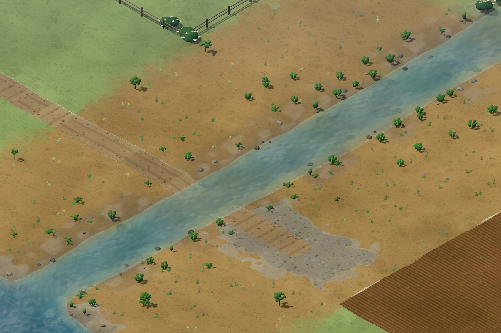
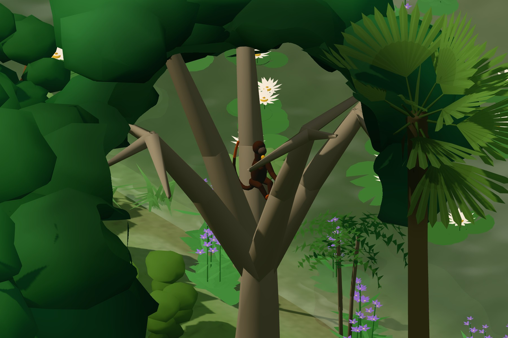
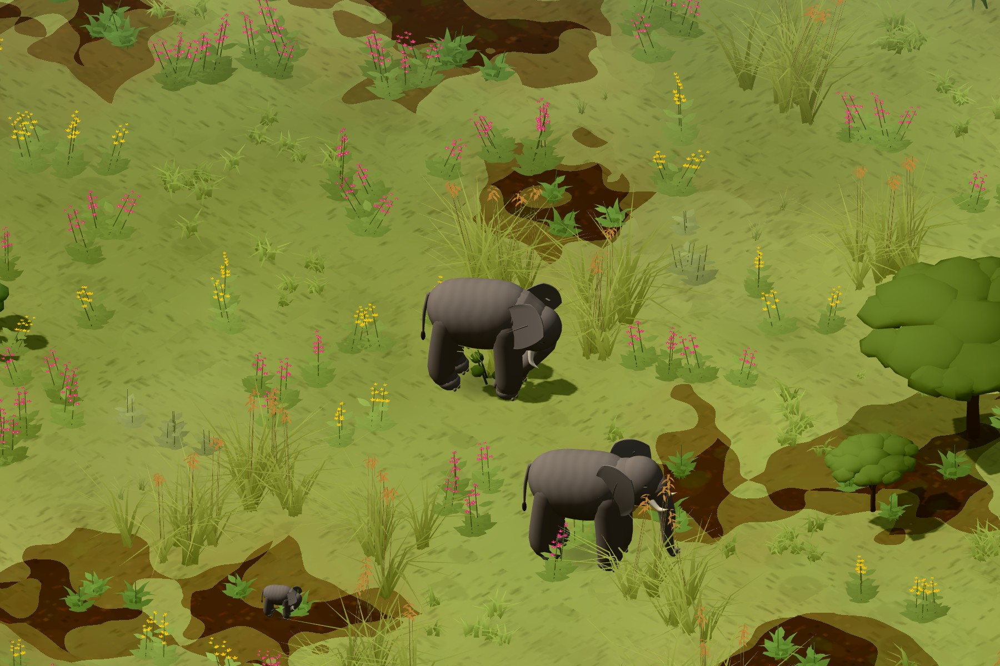
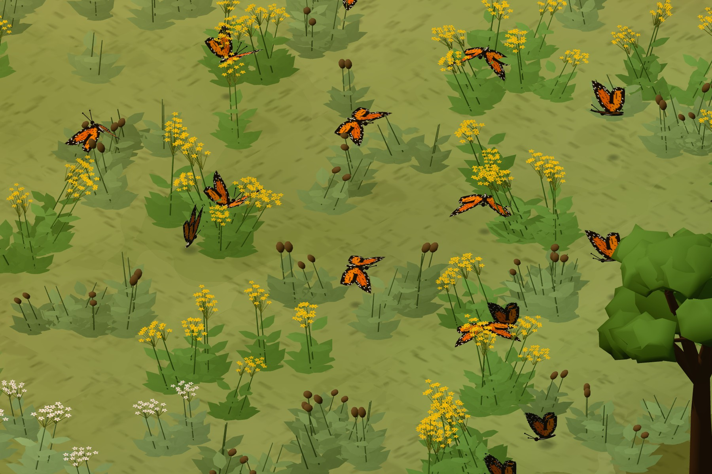
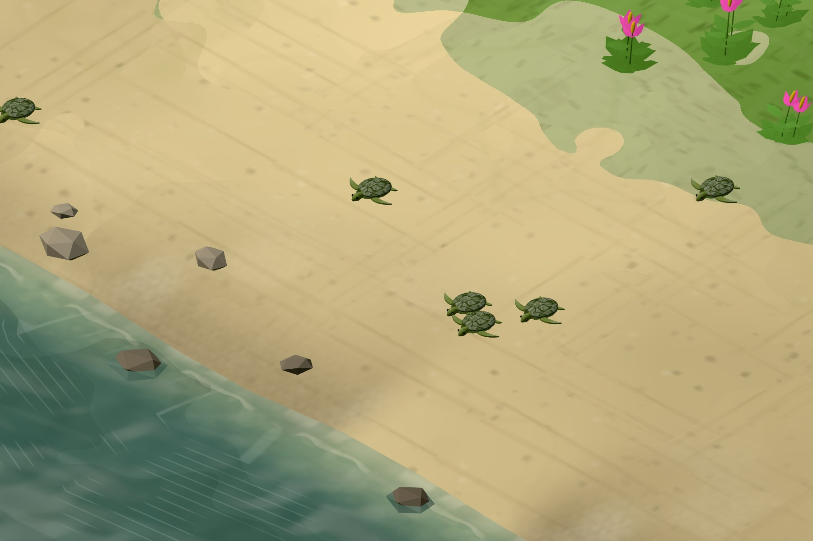
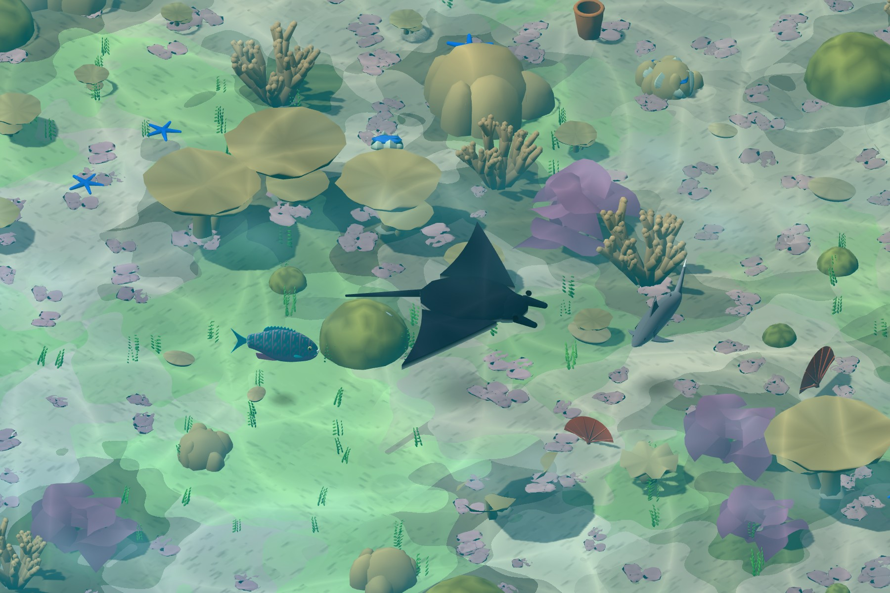
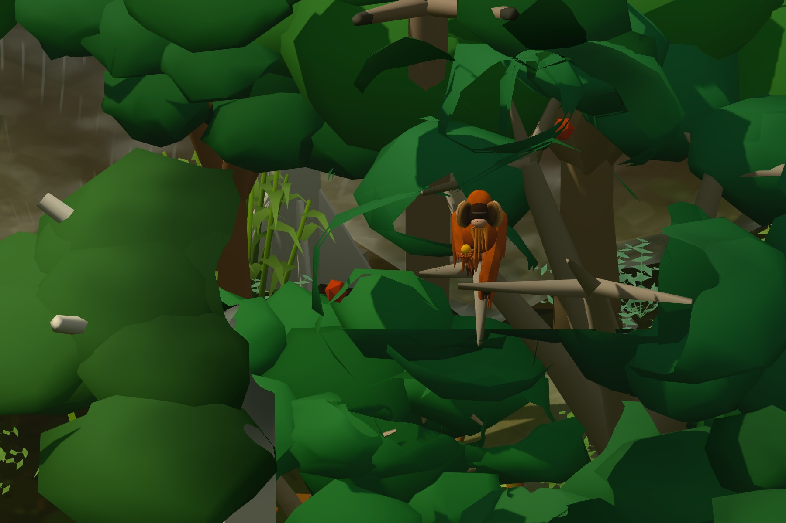

Game imagery & source notes
Fresh views
from the game.
These images show Second Growth’s seven landscapes, keystone wildlife moments, a creek-restoration sequence and habitat details. The wildlife close-ups are staged game scenes; the creek sequence follows one evolving save.
Opening image
Pacific Northwest creek habitat.
The shorter header keeps its translucent navigation and title panel. Its desktop image is 2400 × 1200 px, with a separate 1200 × 1600 px phone framing. The seeded restored habitat fixture has a thinned foreground bank and posed Roosevelt elk, a black-tailed deer, a North American beaver, a great blue heron and wood ducks. Animal models use their normal game scale.
This is a staged habitat study, not a campaign outcome. The scene uses the production renderer and lighting. Header source revision, camera settings and image hashes ↗
One save · One camera
A creek through two game years.
This sequence begins with a new Pacific Northwest free-play game, standard difficulty, seed 1987. The first capture is in May, Year 1. The same save then uses the game’s restoration tools: remove the culvert, pull invasives, loosen and mulch soil, and plant native streamside shrubs, pioneer trees and meadow plants. The final capture follows 240 daily simulation ticks with wildlife movement, equivalent to two game years. No further planting is performed.




All three captures use the same camera, image dimensions and renderer settings. Initial and final captures are in the same month. Weather and vegetation still follow the simulation; any naturally occurring animals are left in the scene. Plant maturity is not manually advanced, and no animals are added to this sequence. These images document this run, rather than promising a universal restoration result.
Tools, successful action counts, dates, save hashes and camera settings ↗
Regional explorer
Seven keystone moments, up close.
Each regional image is a new 1800 × 1200 px capture, tightly framed around one of the game’s keystone moments. The setups are staged in seeded habitat fixtures, using the production behavior helpers, moment triggers, model poses and selected-animal canopy reveal. They do not depict a recorded campaign outcome. Select an image to inspect the full capture.

Species represented: Red alder · Western redcedar · Roosevelt elk · North American beaver.


Species represented: Brazil nut · Strangler fig · Red-handed howler monkey · Scarlet macaw.


Species represented: Red oat grass · Umbrella thorn · Wildebeest · Plains zebra.


Species represented: White oak · Swamp milkweed · Monarch butterfly · Carolina chickadee.


Species represented: Guanacaste · Red mangrove · Olive ridley sea turtle.


Species represented: Staghorn coral · Giant clam · Steephead parrotfish · Green sea turtle.


Species represented: Light red meranti · Strangler fig · Sumatran orangutan · Siamang.
Habitat details
A closer view of the habitat.
Three new close views support the ecology section. They use current models and their normal scale, framed more closely to show vegetation structure, stream habitat and reef substrate. The wildlife is posed; the captions do not claim an observed feeding or hunting event.


Reading the images
Game scenes and simulation outcomes.
The wildlife close-ups use staged encounters and normal game models. The creek sequence records one save, one camera and a defined set of restoration actions. These images describe what was rendered; they do not claim scientific validation or predict outcomes at real restoration sites.
The homepage loads static images and small image-selection controls. The simulation runs when you play Second Growth.